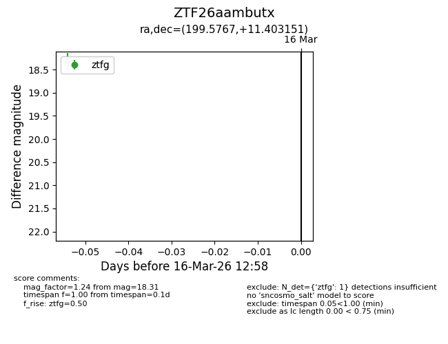
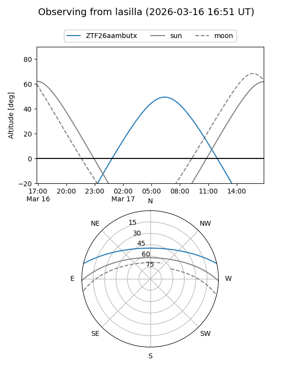
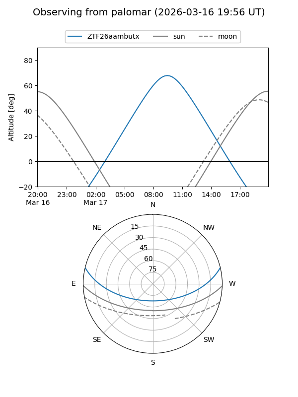

ZTF26aambutx
Target ZTF26aambutx at 2026-03-16 13:00
Aliases and brokers:
FINK: link
Lasair: link
ALeRCE: link
alt names
ZTF26aambutx (ztf,fink_ztf)
Coordinates:
equatorial (ra, dec) = 199.5767,+11.40315
equatorial (HMS+DMS) = 13:18:18.42,+11:24:11.34
galactic (l, b) = (326.0987,+73.05487)
Flags:
Photometry:
last ztfg=18.31
1 ztfg detections
Lightcurve

Visibility


Additional plots